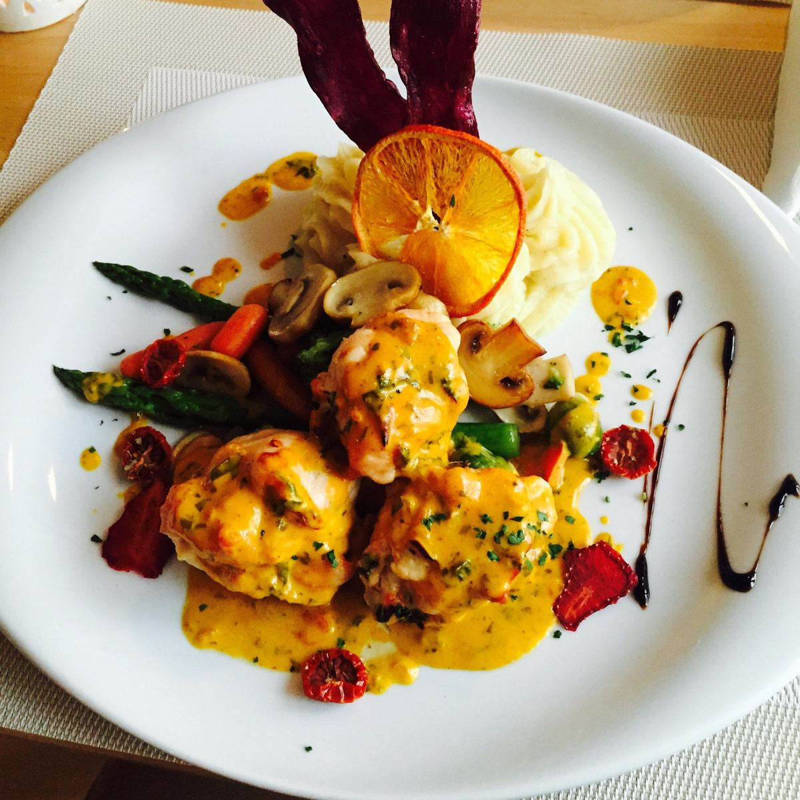
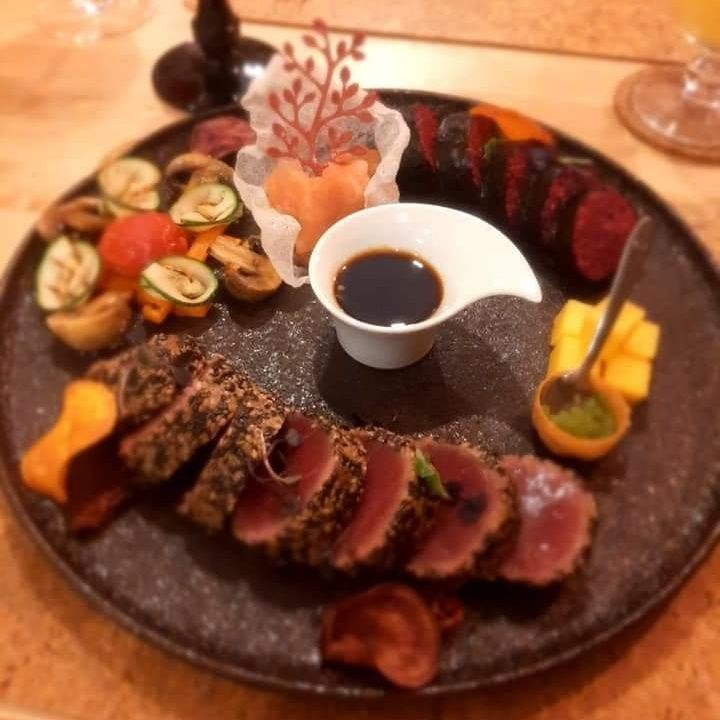
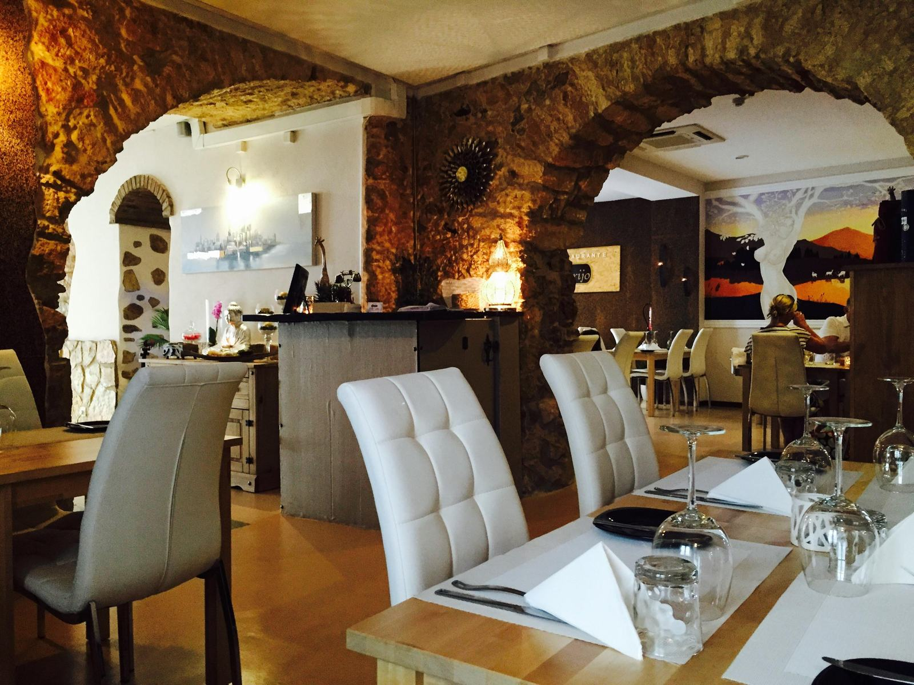

Um esconderijo no centro de São Brás
Cozinha de fusão: base portuguesa e mediterrânica, com sabores da Ásia. Só jantares, de segunda a sexta, das 19:00 às 23:30.
Jantares de segunda a sexta, 19:00–23:30 Pagamento só em dinheiro

A carta
Base portuguesa e mediterrânica, com sabores da Ásia. Pratos principais entre 19 € e 24 €, e a apresentação de que tanto falam os clientes.
Carne
- Barriga de porco19 €cozinhada lentamente sobre salteado de espinafres, bacon e feijão, com palitos de batata-doce e molho barbecue
- Bife do lombo de novilho23 €legumes salteados, batata gratinada e molho de vinho tinto aromatizado com alecrim
- Bife da vazia20 €legumes salteados, batata salteada e molho de pimento verde
- Costeletas de borrego24 €do lombo, grelhadas, com legumes, puré de batata-doce roxa e molho de mirtilos
- Peito de pato[preço]laminado, com gomos de laranja, rúcula e cubos de batata com ervas finas, regado com vinagrete de mel, vinho do Porto e canela
- Ballotine de frango[preço]peito recheado com legumes e ervas aromáticas, batata aos cubos, legumes salteados e molho de sésamo
Peixe

- Tataki de atum19 €arroz de sushi, legumes grelhados, gengibre e pérolas de wasabi
- Salmão marinado19 €em soja e citrinos, com legumes salteados, batata gratinada e molho teriyaki cítrico
- Linguado com camarão19 €filetes enrolados em camarão, com legumes, espinafres, puré de batata e molho mediterrâneo
- Camarão salteado19 €com embrulho de arroz salteado, molho chili com limão, ervas aromáticas e lascas de gengibre
- Pad thai de camarão19 €noodles de arroz, ovo, rebentos de soja, edamame, coentros, amendoins, pimento vermelho, pimenta caiena, molho de soja e ponzu
Vegan
- Couve-flor crocante19 €lentilhas vermelhas, legumes grelhados com sabores asiáticos e molho de iogurte vegan
- Pad thai vegan19 €massa de arroz, legumes, amendoins, rebentos de soja, edamame, coentros, pimento vermelho, molho de soja, pimenta caiena e ponzu
Na mesa, a carta tem ainda couvert, entradas, sobremesas e cocktails, e indica os alergénios de cada prato.
Por fora, ninguém adivinha
Uma porta discreta numa rua do centro, perto da Câmara Municipal. Lá dentro, arcos de pedra, paredes brancas, luz baixa e jazz em fundo. Os talheres mudam-se de luvas brancas.

4,7 no Google, com 423 avaliações. 4,6 no Tripadvisor, com 618, e o n.º 2 entre 56 restaurantes de São Brás de Alportel.
-
“Espaço cuidado, com muito bom gosto, pessoal muito atencioso, Chef com muita atenção aos detalhes, texturas e sabores, estilo Gourmet mas com quantidade.”
Sr. Garfo, Faro · Tripadvisor, junho de 2023
-
“Este restaurante é fantástico! Tem pessoal muito bem formado, comida de alta qualidade e decoração muito bonita.”
Cliente do Tripadvisor · setembro de 2024
-
“Dos melhores restaurantes onde já estive, tanto pela qualidade da comida como pelo atendimento, ambiente etc.”
Fátima I. · Tripadvisor, setembro de 2023
Ligue com antecedência. A sala enche muitas vezes.
Traga dinheiro. A casa não aceita cartões.
Venha a partir das 19:00, de segunda a sexta.
Horário
Jantares de segunda a sexta
| Segunda | 19:00–23:30 |
|---|---|
| Terça | 19:00–23:30 |
| Quarta | 19:00–23:30 |
| Quinta | 19:00–23:30 |
| Sexta | 19:00–23:30 |
| Sábado | Fechado |
| Domingo | Fechado |
Morada
Rua Gago Coutinho 458150-151 São Brás de Alportel
Perto da Câmara Municipal Abrir no Google Maps
Bom saber
- Opções vegetarianas, vegan e sem glúten
- Acessível em cadeira de rodas: entrada, sala e casa de banho
- Mesas no exterior
- Cadeiras de bebé
- Vales de oferta
- Wi-Fi gratuito